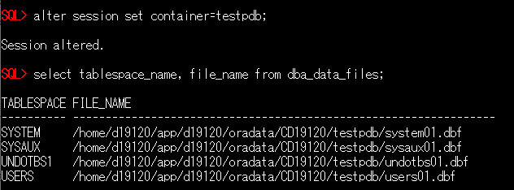
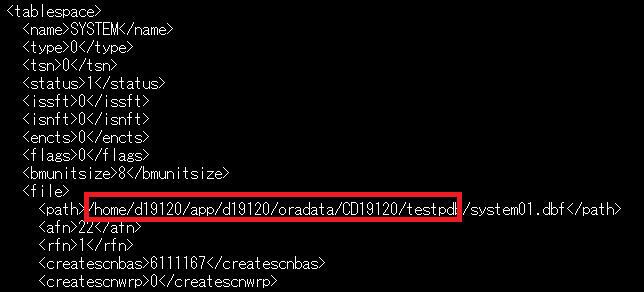

はじめに
Base Database Service (BaseDB)では、12c 以降のデータベースをプロビジョニングした場合、デフォルトでマルチテナント・コンテナ・データベース(CDB)で作成されます。 CDBで構成されているオンプレミスのデータベースからBaseDBへ移行する場合、PDBのアンプラグ・プラグを行う事で簡単に移行可能です。 その際、両データベースのバージョンに差異があった場合は autoupgrade等のツールを利用する事で、バージョンアップも行う事が可能です。
ここでは、オンプレミスのデータベース(19.12.0.0.0)からBaseDB(19.12.0.0.0)へPDBを移行する手順をご紹介します。
前提条件 :
-
移行元のデータベースがCDBで構成されていること
-
Oracle CloudでOracle Databaseを使おう を通じて Oracle Database の作成が完了していること
目次
所要時間 : 約1時間30分
1. 移行元のデータベースからPDBをアンプラグする
まずは移行元のデータベースから、移行対象のPDBをアンプラグします。 アンプラグはDatabase Configuration Assistantツールを使って行う事も可能ですが、今回はコマンドでの実施手順を紹介します。
- 対象PDBの構成確認します
PDBの移動にあたってデータファイルをBaseDBに持っていく必要があります。
まずは下記SELECT文にて対象PDBで使用しているデータファイルのディレクトリを確認します。
alter session set container=<pdb_name>; select tablespace_name, file_name from dba_data_files;（作業イメージ）
 - 対象PDBをクローズします
alter pluggable database <pdb_name> close; - 対象PDBのアンプラグします
alter pluggable database testpdb unplug into '<任意のディレクトリ>/testpdb.xml'; -
対象PDBで使用しているデータファイル、及びアンプラグ時に生成されたxmlファイルをBaseDB上のディレクトリにコピーします
- 移行元のデータベースにはアンプラグしたPDBの情報が残りますので、必要に応じて削除して下さい。
以上でPDBのアンプラグ完了です。
2. BaseDBにPDBをプラグする
- アンプラグ時に生成されたxmlファイルを開き、データファイルのパスをBaseDB上のパスに書き換えます
※次の例では、データファイル及びxmlファイルをBaseDB上の/home/oracle/work/ディレクトリ配下に配置しています。- 書き換え前
- 書き換え後

- CDBに接続し、PDBのプラグを実行します
create pluggable database <pdb_name> using '<xmlファイルのフルパス>' file_name_convert = ('<データファイルの配置ディレクトリ>','<データファイルの再配置先>');（作業イメージ）
※testpdb2 という名前でプラグしており、ASMディスクグループ上に再配置する為に”+DATA” を指定 - プラグしたPDBをオープンします
alter pluggable database <pdb_name> open; - PDB_PLUG_IN_VIOLATIONS ビューを確認し、TYPE列値が’ERROR’となっているものがないか確認します
※TYPE列=’ERROR’となっている項目がある場合、ACTION列の内容に従ってエラーを解消する必要がありますselect * from pdb_plug_in_violations where status ='RESOLVED';
3. 表領域の暗号化を行う
BaseDB上のデータベースでは、セキュリティ観点から表領域の暗号化を強く推奨しており、非暗号化の表領域を新規作成する事ができません。 移行元のデータベースで表領域を暗号化していない場合、プラグ後のPDBも表領域は暗号化されていない為、次の手順にて暗号化する事が可能です。
- プラグしたPDB用のTDEマスター暗号化鍵を生成します
alter session set container=<PDB_NAME>; administer key management set key force keystore identified by "<TDE wallet password>" with backup; - 表領域の暗号化変換を行います
alter session set container=<PDB_NAME>; alter tablespace <TABLESPACE_NAME> encryption online encrypt; - PDBを再起動し、pdb_plug_in_violationsビューに”PENDING”となっている項目がない事を確認します
select * from pdb_plug_in_violations where status <> 'RESOLVED';
なお、プラグしたPDBがOCIコンソール上に表示されるまでタイムラグがありますので、暫くお待ち頂いてからご確認下さい。
以上で、この章の作業は完了です。